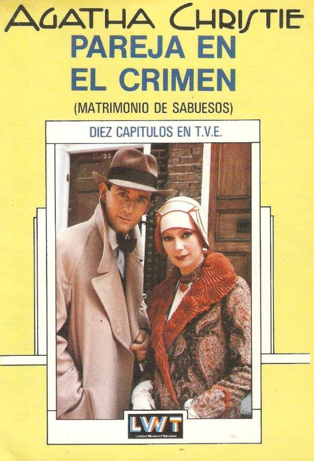

Pareja en el crimen: Matrimonio de sabuesos
- Título: Pareja en el crimen
- Autor: Agatha Christie
- Editorial: -
- Año de primera edición: 1929
- Género: Detectivesco
- ISBN: -
Sinopsis
Tommy y Tuppence Beresford son una pareja de investigadores que desde hace algunos años se encuentran en una especie de “retiro involuntario” de las investigaciones de casos. Tuppence, la más aventurera, insiste en volver al ruedo, así que cuando les llega la oferta de hacerse cargo de una agencia de detectives, la toman sin pensarlo demasiado. Lo interesante de esta oficina es que la agencia a la cual pertenece posee fama global, haciéndose cargo de la gran “Agencia internacional de detectives Blunt” debiendo ellos hacerse pasar momentáneamente por el mismo señor Blunt, dueño de la agencia y un detective muy afamado pero cuyo rostro es una incógnita para la mayoría de las personas.
Opinión personal
Para comenzar con esto y que quede bien claro desde el primer renglón: Este libro no es una novela, es una especie de antología de relatos detectivescos. Cada uno o dos capítulos se cuenta un nuevo caso el cual aceptan Tommy y Tuppence, ya sea para pasar el rato o porque realmente se interesan en el caso o incluso es algo verdaderamente serio e incluso peligroso. Primero lo que si me ha gustado del libro. El peso que tienen sobre sus hombros al reemplazar al señor Blunt y sus habilidades deductivas los obliga a obtener resultados de forma rápida, teniendo que asumir ciertos datos e incluso arriesgándose con alguna conclusión anticipada. Esto me ha gustado en cierto sentido, agrega un poco de peligro, además de cierto toque de humor a lo que ocurre al resolverse las directivas tomadas por la pareja. Como ya mencioné la pareja funciona muy bien, la química entre ellos el cómo hacen funcionar su matrimonio a la vez que su trabajo, las conversaciones, la confianza del uno en el otro para cada caso y como bromean entre ellos está tan bien escrito que uno se cree perfectamente que sean una pareja casada hace unos pocos años. Ahora con lo malo… si, tan rápido. Los casos son algo más malo que bueno, pero que al fin y al cabo no tienen tanto la culpa por el misterio en sí, si no que el culpable es el poco desarrollo que posee cada uno. No me ha gustado mucho el formato de “pequeños casos” que se resuelven en, como máximo, dos capítulos. Los misterios me gustan bien desarrollados y explicados. No quiero decir que un misterio corto sea inherentemente malo, pero en este caso son solo unas pocas páginas para cada misterio, algo que no terminó por convencerme. Algunos casos o misterios eran realmente interesantes y difíciles de resolver por parte del lector, pero muchos otros (por no decir la mayoría) fueron casos muy predecibles y simples. Puedo rescatar unos pocos de toda la colección, pero son contados con los dedos de una mano. Los casos son algo más malo que bueno, pero que al fin y al cabo no tienen tanto la culpa por el misterio en sí, si no que el culpable es el poco desarrollo que posee cada uno. No me ha gustado mucho el formato de “pequeños casos” que se resuelven en, como máximo, dos capítulos. Los misterios me gustan bien desarrollados y explicados. No quiero decir que un misterio corto sea inherentemente malo, pero en este caso son solo unas pocas páginas para cada misterio, algo que no terminó por convencerme. Algunos casos o misterios eran realmente interesantes y difíciles de resolver por parte del lector, pero muchos otros (por no decir la mayoría) fueron casos muy predecibles y simples. Puedo rescatar unos pocos de toda la colección, pero son contados con los dedos de una mano. Otro punto que no me ha gustado es el hecho de que cada caso, o la enorme mayoría de esta colección, tienen referencias a otros grandes detectives anteriores o de la misma época en que fue escrito el libro. Esto no lo digo yo, sino que es comentado por la propia pareja en cada caso en que ocurre. A veces actúan como Sherlock Holmes, los hermanos Okewood e incluso en uno de los últimos casos como Hercules Poirot –El mas gran detective ideado por Agatha Christie- y todo esto sumaría en la debida época y con un fanático enfermo de los cuentos e historias de misterio de hace casi más de 100 años. Tampoco es algo que sea completamente negativo, pero en esta época de la historia muchos fueron olvidados o no son tan reconocidos como para entender los paralelismos cuando la pareja dice: Este caso me recuerda a este libro de misterio, así que adoptaré la personalidad de este personaje o detective. Siguiente punto negativo el “hilo argumental general” que se supone debe atravesar cada relato ya que es algo más importante, pero que finalmente solo es mencionado al inicio y luego en el capítulo final. Siendo esta “amenaza” que se cernía sobre la pareja, algo que se deja completamente de lado solo para retomarse en el capítulo final, es decir su desarrollo fue nulo. Me hubiera gustado muchísimo tener ciertas menciones, pistas o encuentros con las personas que podrían poner en peligro toda la empresa de haber suplantado al reconocido detective. Estos enemigos, se supone, serían una especie de espías rusos que querían asesinar al señor Blunt. Se pudo haber jugado muchísimo con este hilo, metiendo pequeñas situaciones en cada capítulo, pero no se hace en ninguno. Una verdadera lástima.
Conclusión
Es difícil decir más de lo que ya dije. No me parece un tan mal libro, pero tampoco sería una primera opción al querer leer o escuchar un libro de misterio y detectives. Es algo entretenido para pasar el rato y no mucho más. La pareja salva que el libro sea un bodrio.